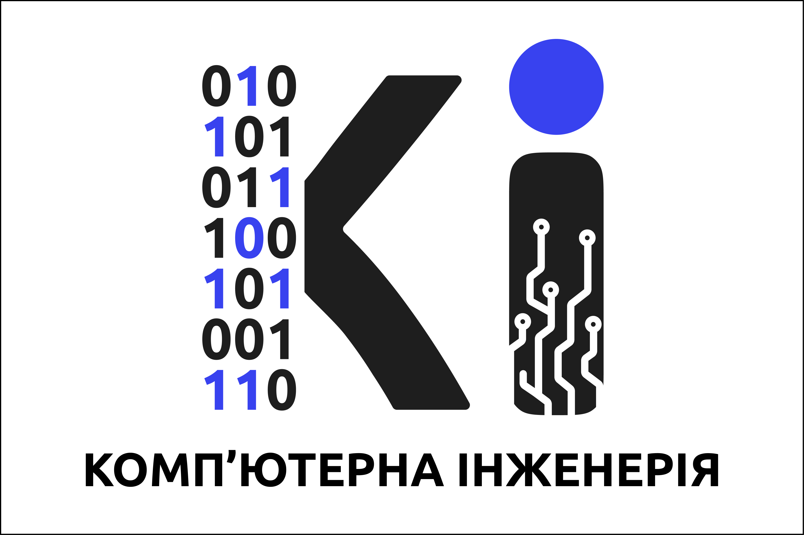

Система контролю версій Git
1. Системи контролю версій та Git
Система контролю версій (VCS — Version Control System) — це спеціалізоване програмне забезпечення, яке фіксує та структурує історію змін файлів у проєкті з плином часу. Воно дозволяє за потреби повернутися до будь-якої попередньої версії коду, детально порівняти ревізії, виявити авторів конкретних правок та ефективно організувати спільну командну роботу над кодовою базою без ризику випадкового перезапису чи втрати даних.
Git — це швидка децентралізована (розподілена) система контролю версій, розроблена Лінусом Торвальдсом у 2005 році для координації розробки ядра Linux. На відміну від застарілих централізованих систем (таких як Subversion чи CVS), у Git кожен розробник має на локальному комп'ютері повну копію всього репозиторію з історією комітів, що забезпечує миттєве виконання операцій та автономність роботи без постійного підключення до сервера чи мережі Інтернет.
2. Основні можливості та переваги використання Git
- Розподілена архітектура: кожен учасник проєкту має автономну копію повної бази даних репозиторію, що усуває єдину точку відмови (Single Point of Failure).
- Висока швидкість та оптимізована продуктивність: операції створення комітів, перегляду журналу та диференційного порівняння виконуються локально з мінімальними накладними витратами.
- Легковажні гілки (Lightweight Branching & Merging): розгалуження та злиття кодових баз реалізовано через вказівники на зрізи стану (snapshots), що робить ізоляцію функціоналу швидкою та безпечною.
- Криптографічна цілісність даних: кожен об'єкт та коміт підписується криптографічним хешем (SHA-1 / SHA-256), що гарантує неможливість непомітної модифікації або пошкодження історії.
- Область підготовки (Staging Area / Index): проміжний шар між робочим деревом та історією комбітів забезпечує гнучкий контроль над формуванням атомарних логічних змін.
3. 10 базових команд роботи в системі Git
| # | Команда | Коментар та практичне призначення |
|---|---|---|
| 1 | git init |
Ініціалізує новий порожній локальний репозиторій Git у поточній директорії (створює системну приховану папку .git). |
| 2 | git clone <url> |
Клонує існуючий віддалений репозиторій за вказаною адресою на локальну машину разом з усіма гілками та повною історією. |
| 3 | git status |
Показує поточний стан робочого дерева: відстежувані, змінені, видалені та додані до індексу файли. |
| 4 | git add <file> |
Додає зазначений файл (або git add . для всіх змінених файлів) до staging area для наступного коміту. |
| 5 | git commit -m "<msg>" |
Фіксує підготовлені в індексі зміни у вигляді нового зрізу історії з коротким пояснювальним повідомленням. |
| 6 | git branch |
Переглядає список локальних гілок (поточна відмічена зірочкою) або створює нову гілку при виклику git branch <name>. |
| 7 | git switch <branch> |
Перемикає робоче дерево на вказану гілку (сучасний безпечний аналог команди git checkout <branch>). |
| 8 | git merge <branch> |
Об'єднує історію змін із зазначеної гілки в поточну активну робочу гілку. |
| 9 | git pull |
Отримує найсвіжіші зміни з віддаленого сервера та автоматично зливає їх з поточною локальною гілкою. |
| 10 | git push <remote> <branch> |
Відправляє зафіксовані локальні коміти до віддаленого репозиторію (наприклад, git push origin main). |
4. Сертифікат курсу по Git
Підтвердження успішного завершення навчального курсу або сертифікації з практичного використання Git:

Місце для зображення сертифіката курсу
Додайте файл зображення (наприклад, certificate.png) та вкажіть його у тегу <img src="..." alt="Сертифікат">
5. Джерела інформації по темі
- Pro Git Book (Scott Chacon and Ben Straub) — Офіційний україномовний переклад — класичний академічний підручник з повною архітектурою внутрішньої будови Git.
- Git Reference Manual — офіційне вичерпне довідкове керівництво з усіх команд, ключів та параметрів.
- GitHub Documentation — посібники з командної розробки, pull requests та організації робочих процесів.
- Atlassian Git Tutorials — детальні методичні статті з Git workflows, злиття та розв'язання конфліктів.
- Learn Git Branching (Інтерактивний тренажер) — візуальна практична платформа для вивчення складних операцій з графом комітів.